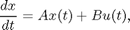
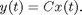
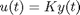
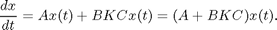
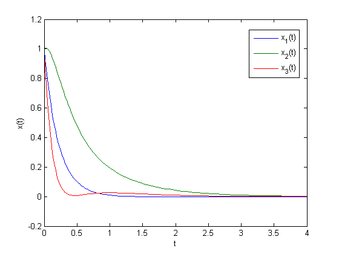

Multi-Objective Goal Attainment Optimization
This demo shows how the Optimization Toolbox™ solver fgoalattain can be used to solve a pole-placement problem via the multiobjective goal attainment method.
Consider a 2-input 2-output unstable plant. The equation describing the evolution of the system x(t) is

where u(t) is the input (control) signal. The output of the system is

The matrices A, B, and C are
A = [ -0.5 0 0; 0 -2 10; 0 1 -2 ]; B = [ 1 0; -2 2; 0 1 ]; C = [ 1 0 0; 0 0 1 ];
Suppose that the control signal u(t) is set as proportional to the output y(t):

for some matrix K.
This means that the evolution of the system x(t) is:

The object of the optimization is to design K to have the following two properties:
1. The real parts of the eigenvalues of (A + B*K*C) are smaller than [-5, -3, -1]. (This is called pole placement in the control literature.)
2. abs(K) <= 4 (each element of K is between -4 and 4)
In order to solve the optimization, first set the multiobjective goals:
goal = [-5, -3, -1];
Set the weights equal to the goals to ensure same percentage under- or over-attainment in the goals.
weight = abs(goal);
Initialize the output feedback controller
K0 = [ -1 -1; -1 -1];
Set upper and lower bounds on the controller
lb = repmat(-4,size(K0)) ub = repmat(4,size(K0))
lb =
-4 -4
-4 -4
ub =
4 4
4 4
Set optimization display parameter to give output at each iteration:
options = optimset('Display','iter');
Create a vector-valued function eigfun that returns the eigenvalues of the closed loop system. This function requires additional parameters (namely, the matrices A, B, and C); the most convenient way to pass these is through an anonymous function:
eigfun = @(K) sort(eig(A+B*K*C));
To begin the optimization we call FGOALATTAIN:
[K,fval,attainfactor,exitflag,output,lambda] = ...
fgoalattain(eigfun,K0,goal,weight,[],[],[],[],lb,ub,[],options);
Attainment Max Line search Directional
Iter F-count factor constraint steplength derivative Procedure
0 6 0 1.88521
1 12 1.031 0.02998 1 0.745
2 18 0.3525 0.06863 1 -0.613
3 24 -0.1706 0.1071 1 -0.223 Hessian modified
4 30 -0.2236 0.06654 1 -0.234 Hessian modified twice
5 36 -0.3568 0.007894 1 -0.0812
6 42 -0.3645 0.000145 1 -0.164 Hessian modified
7 48 -0.3645 0 1 -0.00515 Hessian modified
8 54 -0.3675 0.0001546 1 -0.00812 Hessian modified twice
9 60 -0.3889 0.008328 1 -0.00751 Hessian modified
10 66 -0.3862 0 1 0.00568
11 72 -0.3863 3.752e-013 1 -0.998 Hessian modified twice
Local minimum possible. Constraints satisfied.
fgoalattain stopped because the size of the current search direction is less than
twice the default value of the step size tolerance and constraints were
satisfied to within the default value of the constraint tolerance.
The value of the control parameters at the solution is:
K
K = -4.0000 -0.2564 -4.0000 -4.0000
The eigenvalues of the closed loop system are in eigfun(K) as follows: (they are also held in output fval)
eigfun(K)
ans = -6.9313 -4.1588 -1.4099
The attainment factor indicates the level of goal achievement. A negative attainment factor indicates over-achievement, positive indicates under-achievement. The value attainfactor we obtained in this run indicates that the objectives have been over-achieved by almost 40 percent:
attainfactor
attainfactor = -0.3863
Here is how the system x(t) evolves from time 0 to time 4, using the calculated feedback matrix K, starting from the point x(0) = [1;1;1].
First solve the differential equation:
[Times, xvals] = ode45(@(u,x)((A + B*K*C)*x),[0,4],[1;1;1]);
Then plot the result:
plot(Times,xvals) legend('x_1(t)','x_2(t)','x_3(t)','Location','best') xlabel('t'); ylabel('x(t)');
Suppose we now require the eigenvalues to be as near as possible to the goal values, [-5, -3, -1]. Set options.GoalsExactAchieve to the number of objectives that should be as near as possible to the goals (i.e., do not try to over-achieve):
All three objectives should be as near as possible to the goals.
options = optimset(options,'GoalsExactAchieve',3);
We are ready to call the optimization solver:
[K,fval,attainfactor,exitflag,output,lambda] = ...
fgoalattain(eigfun,K0,goal,weight,[],[],[],[],lb,ub,[],options);
Attainment Max Line search Directional
Iter F-count factor constraint steplength derivative Procedure
0 6 0 1.88521
1 12 1.031 0.02998 1 0.745
2 18 0.3525 0.06863 1 -0.613
3 24 0.1528 -0.009105 1 -0.22 Hessian modified
4 30 0.02684 0.03722 1 -0.166 Hessian modified
5 36 3.469e-018 0.005702 1 -0.116 Hessian modified
6 42 2.746e-019 9.674e-006 1 -2.76e-016 Hessian modified
7 48 1.13e-022 4.795e-011 1 -1.44e-014 Hessian modified
Local minimum possible. Constraints satisfied.
fgoalattain stopped because the size of the current search direction is less than
twice the default value of the step size tolerance and constraints were
satisfied to within the default value of the constraint tolerance.
The value of the control parameters at this solution is:
K
K = -1.5954 1.2040 -0.4201 -2.9046
This time the eigenvalues of the closed loop system, which are also held in output fval, are as follows:
eigfun(K)
ans = -5.0000 -3.0000 -1.0000
The attainment factor is the level of goal achievement. A negative attainment factor indicates over-achievement, positive indicates under-achievement. The low attainfactor obtained indicates that the eigenvalues have almost exactly met the goals:
attainfactor
attainfactor = 1.1304e-022
Here is how the system x(t) evolves from time 0 to time 4, using the new calculated feedback matrix K, starting from the point x(0) = [1;1;1].
First solve the differential equation:
[Times, xvals] = ode45(@(u,x)((A + B*K*C)*x),[0,4],[1;1;1]);
Then plot the result:
plot(Times,xvals) legend('x_1(t)','x_2(t)','x_3(t)','Location','best') xlabel('t'); ylabel('x(t)');